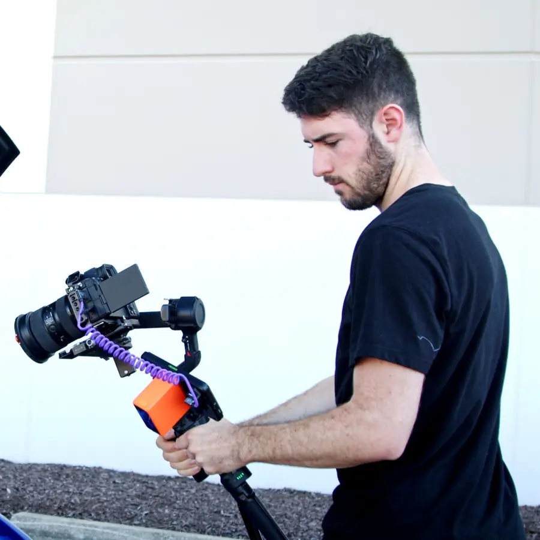

Home / About
AboutA St. Charles studio for St. Louis trades and shops.
Onyx Media is Max Fisher's studio. We film, edit and run ads for home service companies and automotive businesses.

[PLACEHOLDER: Max's story, 2 short paragraphs.]
How we work
The person who plans your shoot is the person behind the camera and the person reading your ad numbers. Nothing gets lost between teams, because there's only one.
Why the trades
We shoot around your schedule, on real jobs, so your crew keeps working while we roll. Homeowners trust what they can see: your trucks, your techs, your finished work.
Why automotive
We understand how shops and dealers sell: trust in the tech, transparency on the repair, and the car looking its best on camera.
Onyx Media is a brand of ONYX HTZ LLC. Paid advertising is delivered through Onyx Performance Advertising.
From the owners.
What local business owners say after working with us.
Media has always been a big investment for our company and we have worked with several photographers, videographers, and content creators. Max has by far shined above anyone else we've worked with. He is fair, honest, punctual, and easy to work with. We have done years of media with him now and have yet to be disappointed once.
Max has the Detail 360 stamp of approval for sure!!!
Onyx Media absolutely rocks!!!
Max and Onyx media has been a pinnacle of our racing team. He is in the process of taking us from a local racing team to a nationally known motorsports team. He is the best in the business.
I highly recommend [Onyx Media] for all your media needs. The owner, Max, is very professional and helpful. I have used his service twice now, and was blown out of the water each time with how well he conducted business and the quality of his work. Whether it is coming up with ideas for content, or capturing the uniqueness to your story, Max has your best interest at heart. Give [Onyx Media] a call, you won’t be disappointed!
This media production company is top-notch! Max was awesome and such a pleasure to work with! We got some awesome footage and video of some amazing cars, and we couldn't have done this or created some stellar images without him and his media production company! If you're looking to spice up your marketing with NEXT-LEVEL photos and video, then look no further than Onyx Media STL! Great job, and thank you.
Max is amazing!! Not only is he personable, but he has an eye on how to make your business, vehicle, etc. stand out in a crowd with the photography and videography that he provides!!
- Victory Raceway
- Cool Touch Graphics
- Mountain Top Motor Company
- Mountain Top Service Center
- Vitale Law Firm
- Almost Home Kennels
- Gorilla Roofing
- K9 Kamp
- Kimco Concrete
- Midnight Motorsports
- Mission's Upholstery
- Timberland Band
- Trailblaze Media
- Wies Offsite
- Meyer & Company Real Estate & Auctions
- Detail 360
- Hovis Racing
- McKenzie Chiropractic
Let's fill your schedule.
15 minutes. We'll look at what you're posting now, what the competition in your area is doing, and what we'd film first.